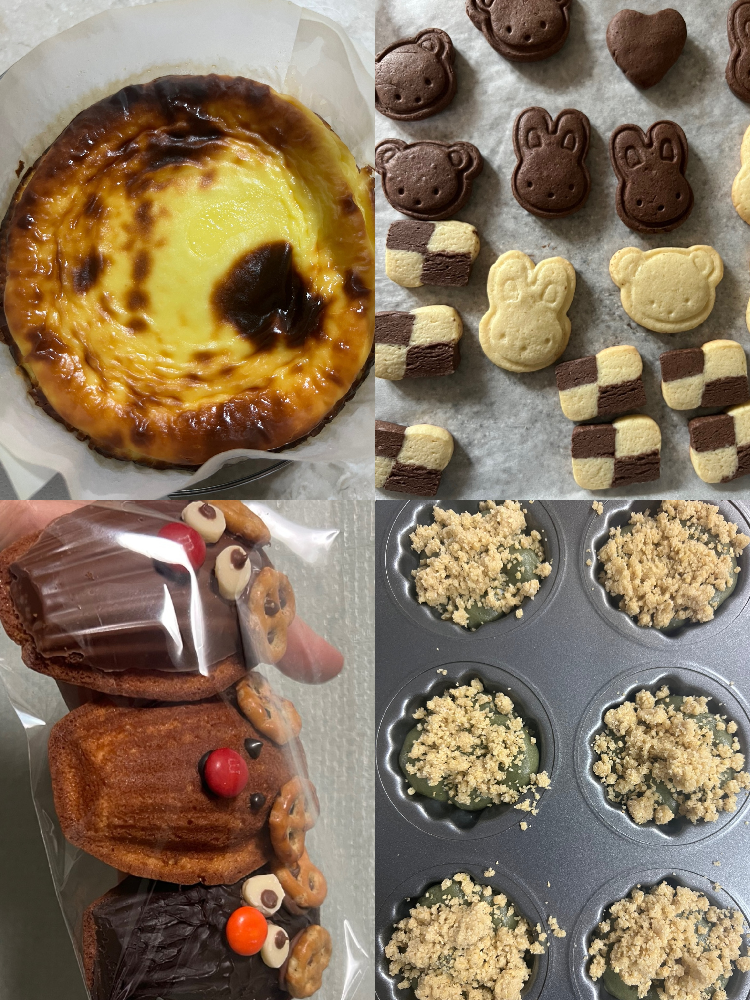

 sumi.0w0
sumi.0w0

# 여행
코로나때 억압받았더니 여행무새가 되었어요
국내,해외 가리지 않고 여행이라면 다 좋아합니다
최근에는 부산에 다녀왔어요!
중문과인데 중국을 한번도 안가봐서 다음에는 꼭 중국에 가보고 싶어요
# 베이킹
빵순이인데 요즘 빵 물가가 너무 비싸서 집에서 만들기 시작했습니다
바스크 치즈케이크, 마들렌을 제일 많이 만들어 먹는 것 같아요!
기회가 된다면 만들어 가겠습니다!
# 산책 및 러닝
여러분 저희 동네가 숨겨진 벚꽃 맛집입니다!!!
집 주변에 천이 있어서 자주 산책하러 나갑니다. 가끔 너구리도 있어요
그리고 요즘엔 살기위해 러닝을 시작했습니다.
좋아요를 눌러주세요
아기사자님이 이 게시물을 좋아합니다
3월 24일